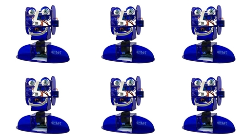

 |
Quelques liens |
Ces quelques liens pourront vous permettre de tester des fonctionalités avec le logiciel scratch ,mais il vous est rappelé que ce n'est pas le langage que nous allons utiliser.
Page de démonstration programmation :
http://community.ohbot.co.uk/ohbothelp/helpFrancais21.html#examples
Le robot s'installe sans difficulté sous Windows 10. Avec Windows 7, vous aurez besoin de ce driver.
Lien du téléchargement du logiciel pour Windows 7
Lien du téléchargement pour Windows 10.
Le site Ohbot.
La documentation complète en anglais.
Pour télécharger des sons gratuitement (baillement, rire...)
Les commandes possibles du robot. Elles sont nombreuses.... Disponibles dans plusieurs langues.
Site anglais
https://education.microsoft.com/en-us/course/054e2152/0
Communauté programmes de démo
Créé avec HelpNDoc Personal Edition: Environnement de création d'aide complet